Anti-Islamists seem to claim that the Prophet (saw) is a p*do (na'uzubillaah) because he married Aaʿisha (ra) when she was 6,
embarrassing claim
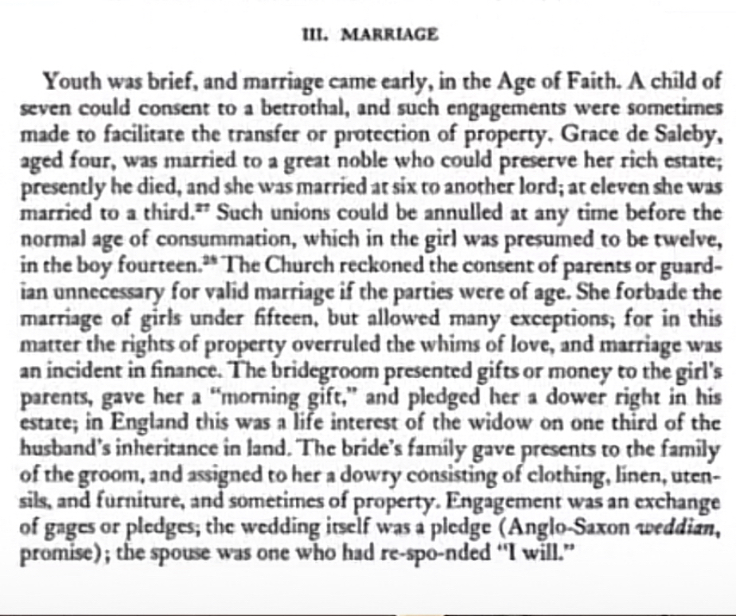
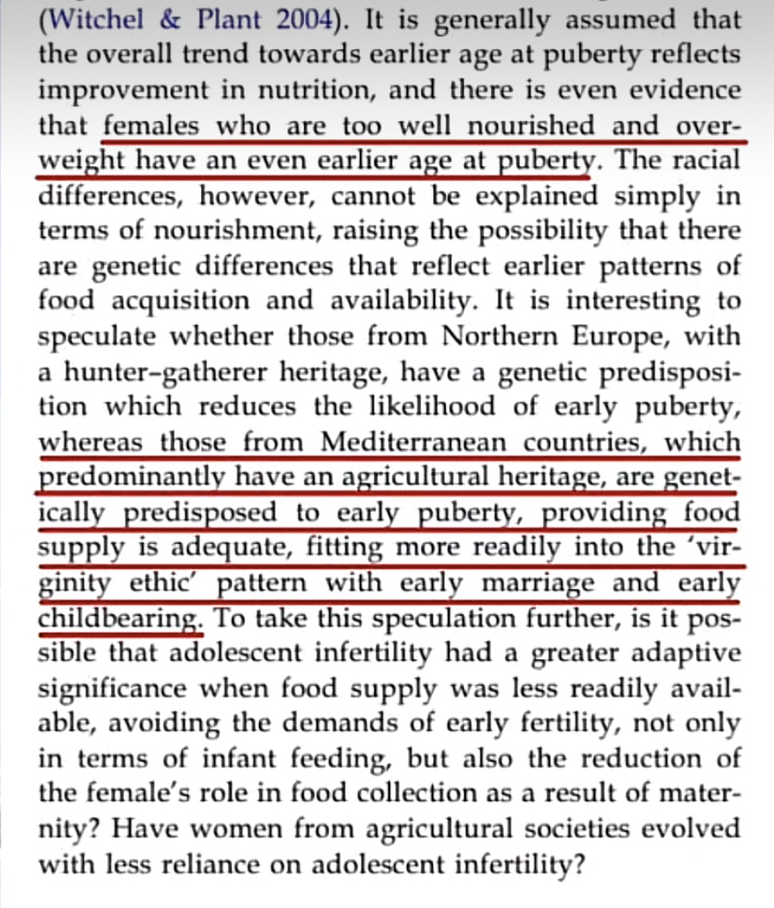
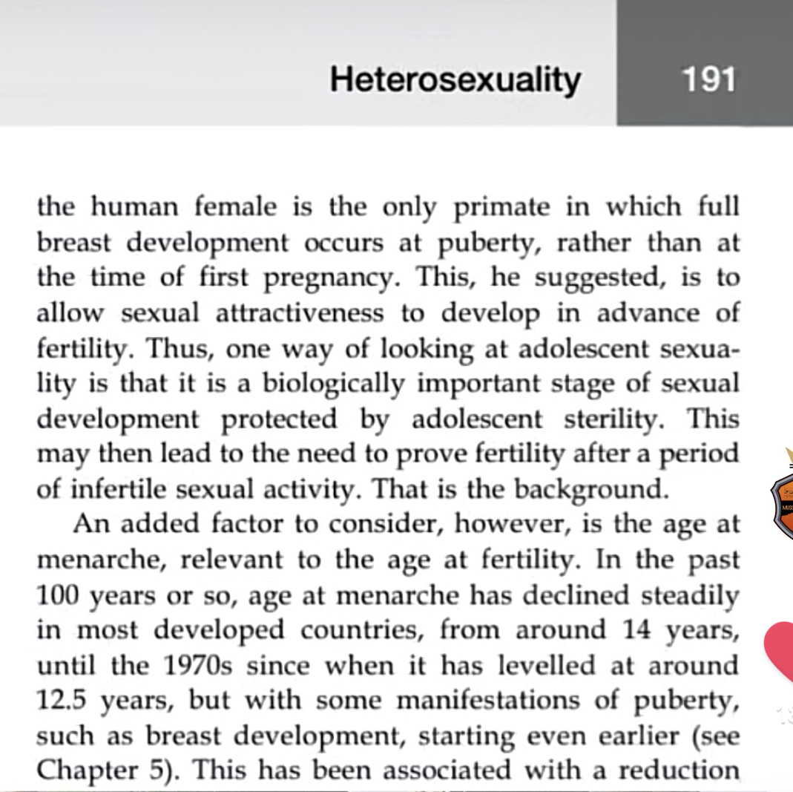
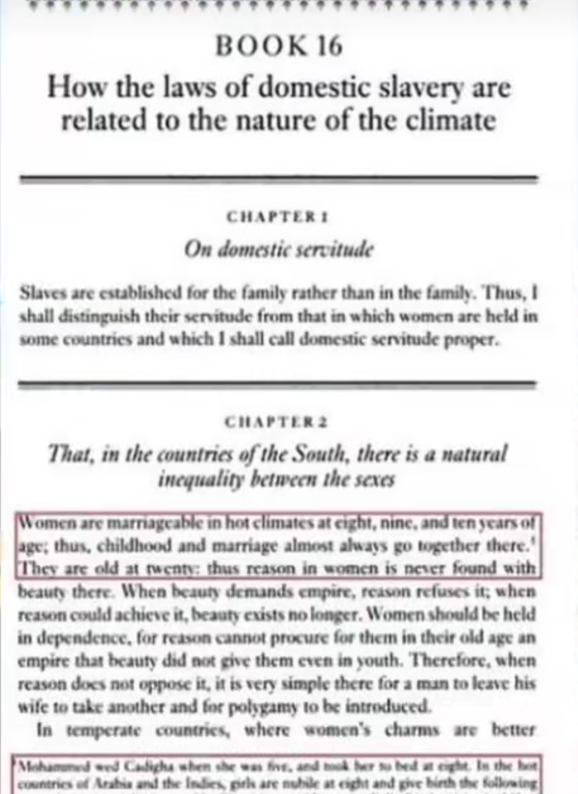
A gigantic compilation of responses to the Aisha's age issue
- Written by Jalaluddeen al-Tabari (@Concordski#7023)
Age of Consent in Scotland in the 20th Century
Under the Scottish law before the twentieth century, any girl who reached the age of nine was allowed to marry, regardless of the age of her husband.
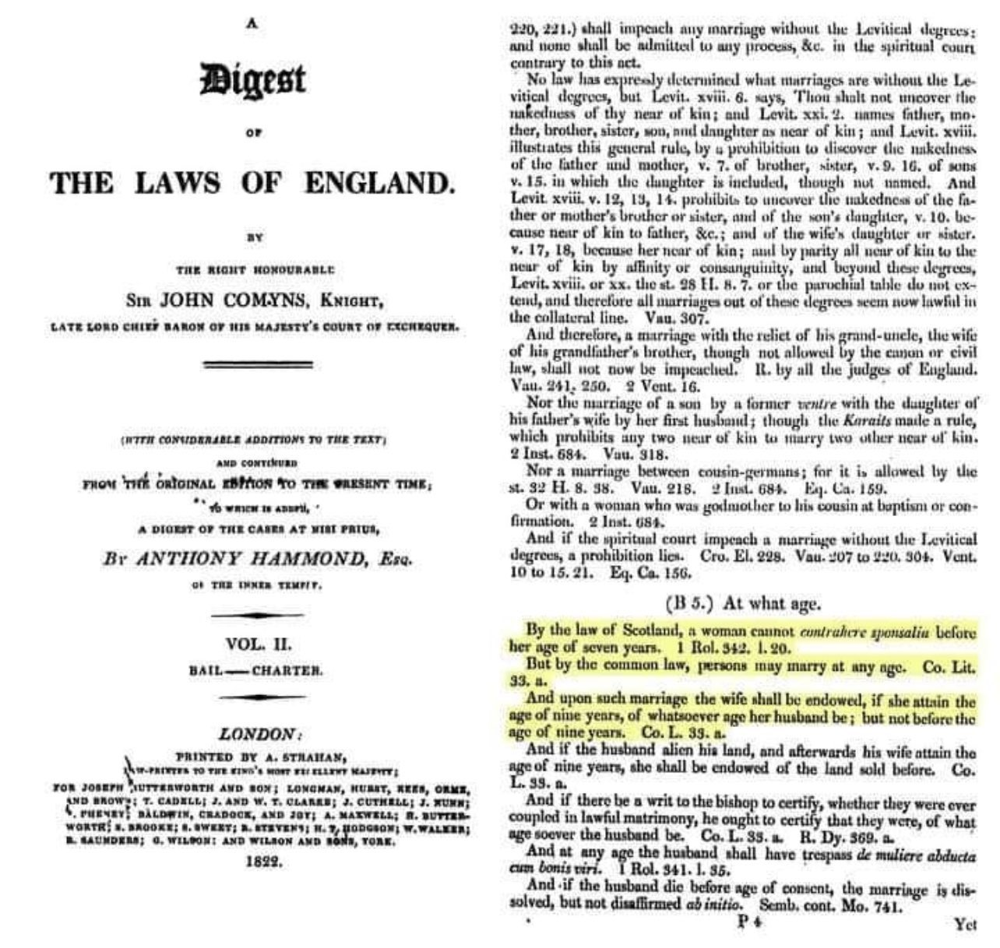
I believe that a lot of our current mores come from reluctance to let our children mature mentally as quickly as our bodies do. Keep in mind that not all societies
share Western mores. And to my surprise, until the latter part of the 19th Century, Children in the Western nations were engaged and married at a much earlier age.
The trend to give children more time to mature is relatively new.
In his book, The Emphatic civilization, (Penguin, NY, 200) Jeremy Rifkin points out that the concept of adolescence only emerged during the last decade of the nineteenth
century and the first three decades of the twentieth century. Society started to think of childhood as extending beyond puberty, into the later teenage years.
Before that, children were considered to graduate into adulthood with the onset of puberty.” [9]
10. The ’American Bar Association’ Journal [August 1996]:
“1275 English common law criminalizes statutory rape- sex between a man and a woman below the age of consent, which was first set at 12 years.
1576 Common Law age of consent lowered to 10 years.
1700s-1800s Statutory rape at common law adopted in the united states. States set the age of consent at 10 or 12 years.” [10]
"According to British common law during the colonial period, the age of consent was seven."
American families past and present, Susan M. Ross.
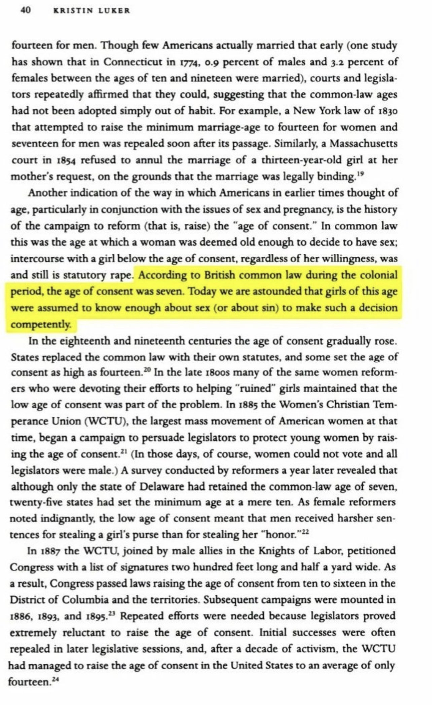
https://sci-hub.se/https://pubmed.ncbi.nlm.nih.gov/16311040/
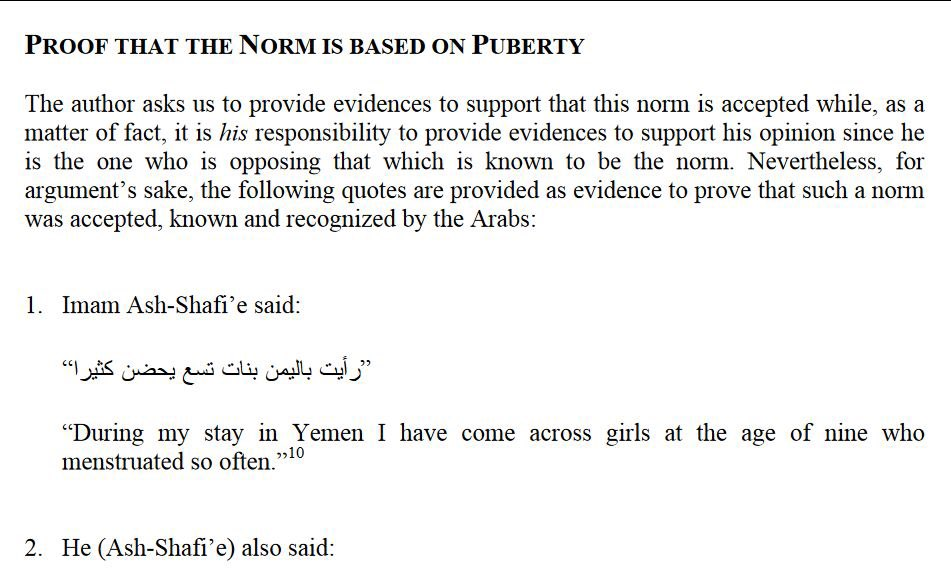
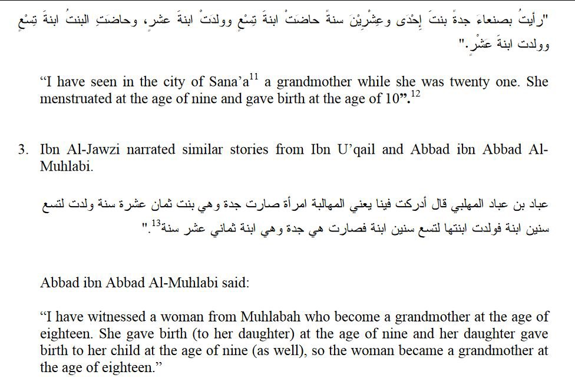
https://yaqeeninstitute.org/read/paper/understanding-aishas-age-an-interdisciplinary-approach
Since marriage is effected by way of a contract, it comes under the ordinance of positive law like other contracts. Consequently according to law
(cap. Tua, De sponsal. impub.) it is determined that marriage may not be contracted before the age of discretion when each party is capable of sufficient
deliberation about marriage, and of mutual fulfilment of the marriage debt, and that marriages otherwise contracted are void. Now for the most part this age
is the fourteenth year in males and the twelfth year in women: but since the ordinances of positive law are consequent upon what happens in the majority of cases,
if anyone reach the required perfection before the aforesaid age, so that nature and reason are sufficiently developed to supply the lack of age,
the marriage is not annulled. Wherefore if the parties who marry before the age of puberty have marital intercourse before the aforesaid age,
their marriage is none the less perpetually indissoluble.
{St. Thomas Aquinas, Summa Theologica, Page 3705}
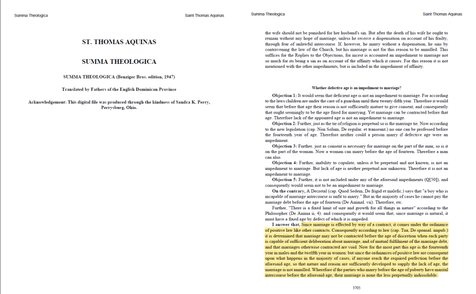
A common objection to the evidence Aisha RA could and did have her first period is that this is just the start of puberty and is nowhere near mature enough,
however this represents a misunderstanding of puberty stages.
There are 5 tanner stages and the period occurs in the 4th stage, so near the end
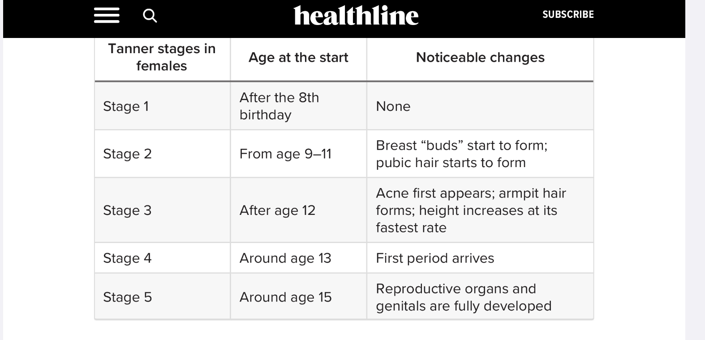
There is also no evidence to suggest consumation was as soon as Aisha RA got her first period, and that she didn’t have more time to reach
balagha(sufficient physical development )
Some argue that Aisha RA may have been physically mature but in no way was mentally mature for consent
However this society was vastly different to the kindergarten era of today, people had to face struggle from a young age and so mental maturity was also much faster.
Her maturity was evident from the way she used to behave and the tasks she used to do, completely unlike a child. Aisha used to assist in Jihad by participating as a
nurse, carrying water to Muhajireen. This is a clear sign of a responsible adult
Narrated Anas:
On the day (of the battle) of Uhad when (some) people retreated and left the Prophet, I saw `Aisha bint Abu Bakr and Um Sulaim, with their robes tucked up so that
the bangles around their ankles were visible hurrying with their water skins (in another narration it is said, "carrying the water skins on their backs").
Then they would pour the water in the mouths of the people, and return to fill the water skins again and came back again to pour water in the mouths of the people.
Sahih bukhari 2880
Another sign of her maturity was the fact that she was engaged to Jubary before Muhammed SAW, but the marriage was cancelled due to fear that Aisha RA would convert
him to Islam. Why would a parent be afraid of a child converting someone to Islam? Would parents today be afraid of a 6 year old changing their sons religion?
This shows Aisha Ra must have been a charismatic and eloquent young lady that could speak in a convincing manner, and not a child
Some object and say brain development finishes at 25 however brain development≠ maturity. While it can contribute it is definitely not the only factor as 2 people
of the same age can have vastly different maturity levels dependent upon their experience
Some people argue Aisha RA wasn’t mature because she played with dolls, however this is a misplaced objection. This is because, unlike today, means of entertainment
was very limited. There were no electronics or television shows, so it is completely normal that adults would continue playing with dolls as a form of entertainment.
Additionally the report about her playing with dolls is at age 14, while today most people mature out of playing with dolls at around age 11-12,
which shows this is a behaviour Aisha RA did not ‘mature’ out of. Some adults even today play with dolls and this in no way diminishes their capacity for consent.
Some may argue that, even if Aisha RA was mature at 9, he married her at 6, which shows he was attracted to someone who hasn’t yet had her first menustration.
However this is a misunderstanding of what marriages were like in the environment. The idea of ‘love marriages’ was not so prevalent, and the marriage to Aisha RA
was to create ties with the family of Abu bakr RA, not due to the prophets attraction to Aisha RA at 6.
Study done by Cambridge showing women in hotter climates also physically mature faster.
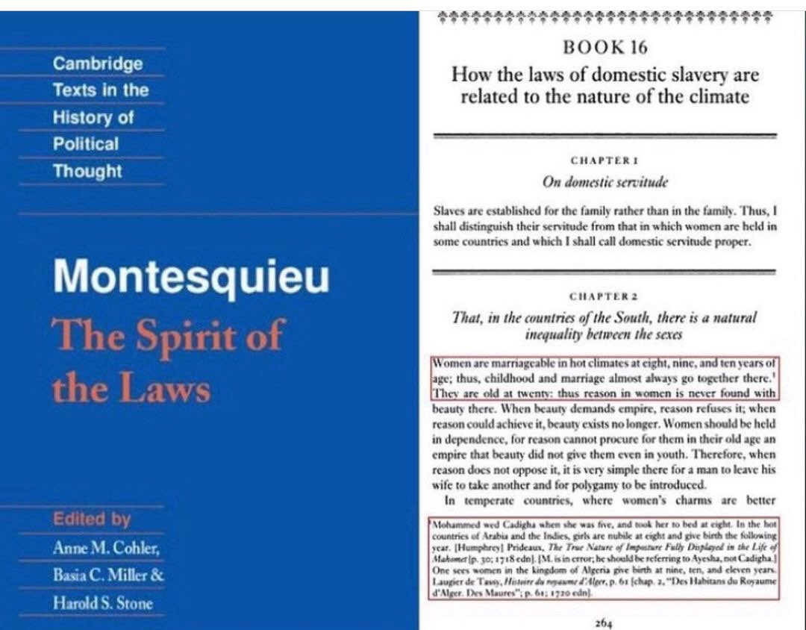
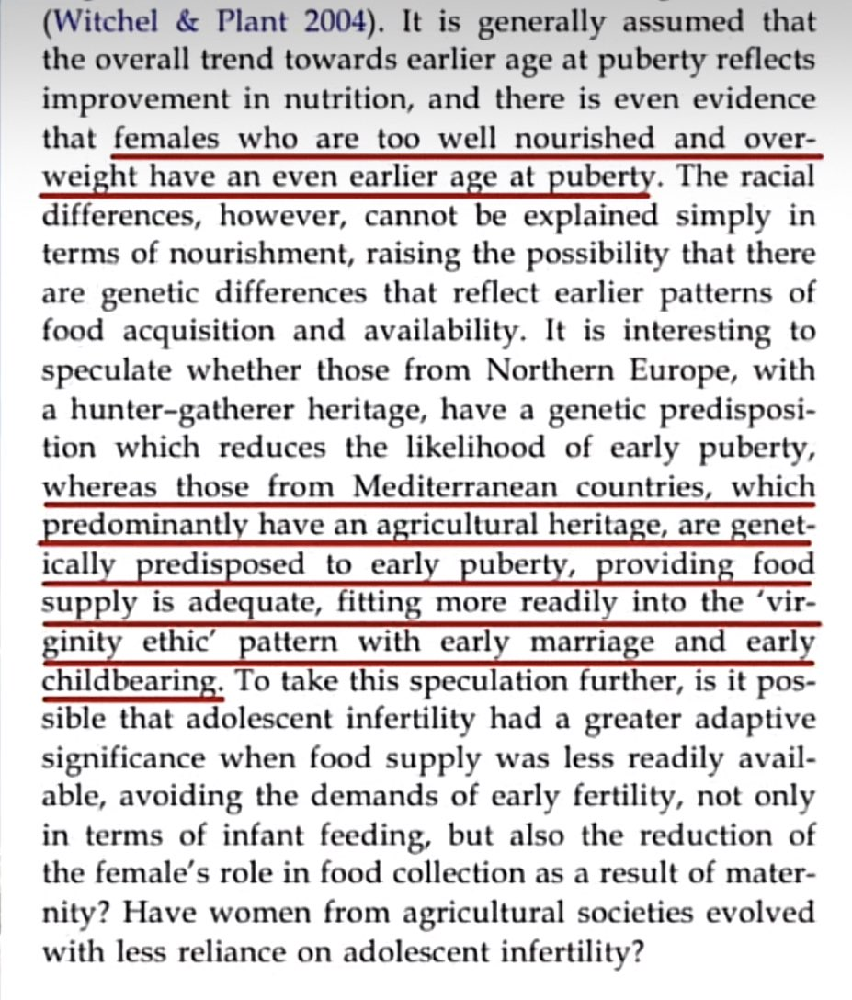
https://m.youtube.com/watch?v=xKn6EOlM9M4
https://m.youtube.com/watch?v=5bXmPV8VlxU&t=379s
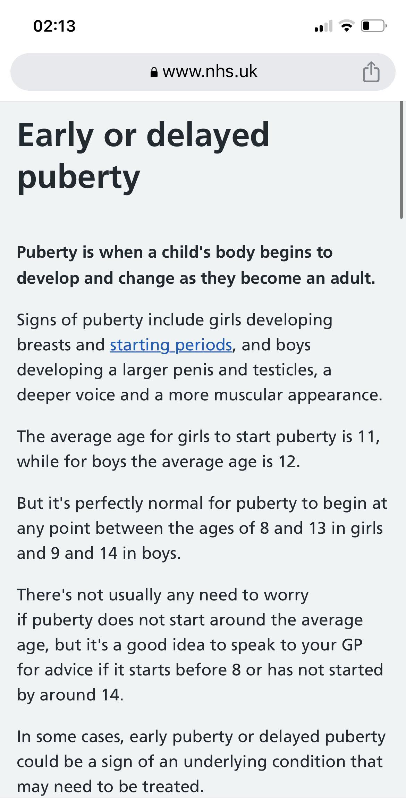